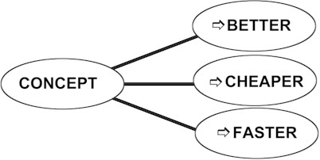

|
By Kalevi Rantanen Introduction Two features characterize top class companies who produce Word Class quality: customer approach and creativity. The need to enhance creativity has accelerated the evolution of new software. Innovation software enables people to use their brain effectively. Relations between human creativity, software and innovation are discussed in the paper. Thinking, Software and Innovation Figure 1 displays relations between thinking, innovation and software. It is generally accepted, that continuous innovation process is "must". Much more slowly companies begin to understand that commitment to innovation has far-reaching consequences.
Figure 1. Relations between thinking, software and innovation First, the concept of an innovation will be defined more strongly. The innovation is not only "something new". Innovation should resolve contradictions and achieve the ideal final result instead of a trade-off.. Second, when a higher level of innovation is required, the level of thinking will change, too. To routine operations should be added more and more creative thinking. Third, creative thinking, consequently, requires new kind of computer software. Most software, for example CAD programs, rationalize long chains of operations on relatively simple data. Data is often numbers or other well-defined information. A computer, supporting creative thinking, should deliver operations on complex data. The data is usually vague, and its meaning will be clarified only step-by-step. Design work will be much more effective when thinking, software and the goal correspond each other. If there are dissonance between goals, thinking skills and tools supporting creative work, the team will use only a small part of its resources. By the way, when I separate different levels of thinking and software, I don´t mean that some type of thinking or software is more important than another. I mean that a routine mode of thinking alone is not enough. Software for detailed design is necessary, but not enough. Facts and Rules What is creative thinking? My wife is a kindergarten teacher. That´s why I have had a good opportunity to observe how pre-school children solve tasks. What does the child need to get an original, creative result? Let´s suppose a child gets a task: "Draw a tree". If a teacher shows a picture of one tree, every kid copies the same model. No original drawings will appear. If a teacher shows pictures of all sorts of trees, tells of them, walks with the children in a park or in a forest, shows a video, etc., that is, gives many facts, the result is very different. All drawings are unique. No one is similar to any model. There will be trees of different size, form and color. Somebody adds a bird sitting on a branch. Another kid draws not only one tree but a whole forest. Children have capability to permute and combine facts to get new solutions - if they have facts. So children need plenty of facts and simple rules. First, the facts should be collected and properly classified. The teacher collects material just of the topic "tree". Second, some rule is needed. For example, the instruction: "Draw a tree". Engineers and scientists work exactly the same way. Let´s consider the air bag problem, described earlier in The TRIZ Journal (Domb 1997b, Kowalick 1997). First, facts should be collected and classified. One good way to classify is to list systems having the same function. The function of the air bag is "to protect occupant" (driver or passanger), or "to hold occupant", or "to retain occupant". Systems that carry this function are, for instance: - Air bag with a low threshhold for deployment: belted occupants protected (+), unbelted can be injured (-) - Air bag with a high threshold for deployment: unbelted occupants are protected (+), unbelted can be injured (-) - Air bag with high power deployment: saves lives of average-size drivers (+), but increases injuries to unbelted passangers (-) - Smart air bag with customized deployment: in principle protects all occupants (+), but is very complex (-) - No air bag, or simply air between an occupant and a dashboard: simple (+) but doesn´t protect at all (-) We have got a list of competing systems, including "no air bag". A non-existing system is always available. Second step: Some rule or law should be implemented to combine and permute the classified facts. A simple rule is a feature transfer. We consider pairs of alternative systems. We try to find pairs which have "complementary" pluses and minuses. The ideal final result will be the combination of pluses without any minuses. For example: - A system with LOW AND HIGH threshold: belted and unbelted occupants protected, no one injured - A system with LOW AND HIGH power deployment: belted and unbelted occupants, average size drivers and small passengers protected - A SMART SYSTEM AND NO SYSTEM at all: the function of a smart bag is carried out, although there are no air bag How to go further? It is useful and interesting to collect good cases from different fields of technology. Then we can use a list of good solutions. For example:
The list of good solutions is, obviously, not enough. Something more is needed. Since lists are so easy to understand and use, let´s try to find and make more lists. Fortunately, many tools of TRIZ are already actually lists. Recommendations for solving physical conflicts is a good list of strong standard solutions:
Innovative principles is perhaps the most popular list. The principles list is discussed in detail in The TRIZ Journal (Domb 1997b) Different lists of evolution trends are published in the literature and software. Let´s see some excerpts from TechOptimizer Pro (TechOptimizer 1997), Prediction module, with "air bag associations":
The trend, well-known to all, but not included in Prediction, is S-curve: The car has got more and more "soft". Will the trend continue? Do we have a car that is an air bag as whole? Prediction list or a prediction tree (TechOptimizer 1997) is actually a list of standard solutions. The example of air bag application is published in the paper of Kowalick (Kowalick 1997). Effects list is available in software (TechOptimizer 1997). For example we find functions:
The functions can be delivered for instance by many geometrical effects:
Resource list. We can also make the list of existing, but often invisible or ignored resources. In the air bag example the bag is a tool protecting an occupant. In other words, the occupant is the object of a function, and the air bag is the function carrier.
See also the paper of Kowalick (Kowalick 1997) and TechOptimizer SW (TechOptimizer 1997). There may be, of course, yet other lists. Altshuller has collected a huge database of fantastic ideas (from sci-fi), which, however, is not published. We can make lists of biological effects, lists of commercial innovations, lists of net links, etc. Lists, of course, should give new information. There should be some new principle of classification. What is so fascinating in lists? They are more "psychological" or "pedagogical" than rigid formulations. It is much easier to look at a list than to formulate, say, the physical conflict. Complicated instructions often can be replaced with lists. Summarizing the lists we have considered we get the following "list of lists":
Lists "feed" the brain, but only when the list is smart and information is reasonably arranged. The brain works according to the principle G.I.G.O -garbage in, garbage out. We are overloaded by data garbage, and we need properly selected information. We have seen that creativity begins from classification. One of the great inventions of Altshuller is the new classification principle. Technical information is usually classified by branch of industry, by branch of science, by function, by time (history), and by other criteria. But before Altshuller it was not classified by the inventive level of solutions. Altshuller refers to Sherlock Holmes (Altshuller and Seljutski 1980, Altshuller 1996). Sir Arthur Conan Doyle, really, envisioned the problem solvers of XXI century. Sherlock Holmes classified information by crimes. His knowledge of "Sensational Literature" was "immense". He knew "every detail of every horror perpetrated in the century" (A Study in Scarlet). The knowledge base allowed him to find useful analogies. For example, in The Sign of Four the great detective tells: "I was consulted last week by Francois le Villard... The case was concerned with a will and possessed some features of interest. I was able to refer him to two parallel cases, the one at Riga in 1857, and the other at St. Louis in 1871, which have suggested to him the true solution." Or in A Study of Scarlet: "Then, of course, this blood belongs to a second individual - presumably the murderer, if murder has been committed. It reminds me of the circumstances attendant on the death of Van Jansen, in Utrecht, in the year ´34." We see, that classification is important everywhere! Evolution of Innovation Software We have seen, that to find and solve problems we need facts and rules. Numerous facts should be collected, stored and retrieved, as well as rules and laws. It seems now nearly self-evident that the computer shoud be used for the storing and retrieving of facts and rules. However, often the most important things are so simple, that they are often in the beginning underestimated due tothis simplicity. TRIZ-based innovative software contains unique and irreplaceable knowledge:
Sometimes people ask: "What is interesting in this? It seems that there are only patent descriptions". Just this "only" is crucial. Examples of patents and other examples, described in the database, make it possible to implement standard solutions, predictions, principles, effects and rules. Yet one question is: "What does TechOptimizer give? I can draw components and functions by hand". The answer is: one can, but no one wants to draw by hand. "Small" practical advantages often makes the whole difference. It is possible to find good examples and information of physical phenomena from many sources. But who has time to go through an enormous mass of information? Personal databases are necessary, but they will always be limited. That´s why the innovation software will soon be as prevalent as CAD or text editors. But there is much more. We have spoken of lists. But lists can be combined with each other. The innovative concept is the combination of trends, standards (or predictions), principles and effects. The recommendations and examples are the bricks of innovation. Myriads of innovative concepts can be got from about 200 general principles (predictions plus principles) and about 1400 effects. TRIZ can be compared with chemistry. From about 100 elements the extremely great variety of compounds can be built. It is interesting to see how the relation of rules and facts has changed in the evolution of software. The first versions of Invention Machine software in the beginning of 1990s contained rather complex dialogues and a limited number of examples. The last SW package, TechOptimizer Pro, contains simple rules and much examples. Valeri Sushkov makes a comparison with the evolution of soundcards (Sushkov 1997). In the beginning developers tried to create complex algorithms to simulate natural sounds. The second generation of soundcards used prerecorded sound samples of various musical instruments. Personal Databases Altshuller writes (Altshuller 1985) that for serious improvement of thinking one must study the methodology over 200 hours course in classroom and additionally make much homework. But what can I do if I haven´t that much time? Collecting and organizing data on a multidisciplinary basis is a less time-consuming way to study problem solving tools. Engineers and other experts process much data every day. Why not to make more effective and more attractive the work that in any case will be done? If you are developing technology for peeling of potatoes, and you learn about an interesting solution in space technology, the information may be worth storing. The next breakthrough innovation in potato processing may come from spacecraft design. Almost certainly it will come from some field remote from the food industry. To learn, understand and use any discipline means to "rediscover" the theory and methodology. Domb describes (Domb 1997a) a succesful exercise when students build their own databases for 40 innovative principles, principles of separation of physical contradictions, and patterns of evolution. Generally one can say, that all principles and techniques of TRIZ should be elaborated by collecting one’s own databases. To use any methodology effectively, an expert should meld the standard knowledge base with his or her own experience. Clues Thinking tools for conceptualization and software for conceptual design has some features very different from the technology for detailed design. The result of the work is a concept. The word "concept" means here a rough sketch or draft. Sunnersjo (Sunnersjo 1996) describes experiences from TRIZ and IM Lab software: "The examples should at first be seen as analogies. It is up to the user to think more about the example and how it can be used."…" Invention Machine Lab should be looked upon as an inspiration. The main part of turning the suggested solution into a design is still up to the engineer to perform." Kowalick (Kowalick 1997) advises using "abstract thinking", when interpreting predictions or standards proposed by the software. We see that software and other tools of TRIZ don´t answer directly to our questions. Does this mean that TRIZ is not so efficient as TRIZ fans like to speak? I would like to compare conceptualization tools with a map and a compass. We want to find something new in a large forest. Traditional advice says, "Leave the beaten track and dive into the woods." The obvious result is that we begin to go in the circle. If we use well marked paths, we´ll find only already known places. A map and a compass allows us to avoid futile efforts, but at the same time leaves for the user freedom to choose the path. The fact that TRIZ and innovation software give just general hints is not a weakness, but a strengh. The user should have room for his own ideas. Even the software doesn´t replace the brain of user. Sushkov sees in the future "collaborative computer software"(Sushkov 1997). The computer will guide, and corret, but not command. Across Industries and Sciences First TRIZ and TRIZ based software evolved and were used mainly in machine building and related industries. The database contained mainly mechanical examples. When TRIZ was introduced to electronics industry, one frequently asked question was: "What we will do with things like pizza box? We design electronics." The last software version TechOptimizer Pro contains already plenty of examples from microelectronics. But this is not most important. Electronics examples are useful in first order for people outside electronics. Developers of electronics will often get their best ideas from mechanical and other "non-electronic" fields. Narrow specialization by branches of industry has made necessary "traverse" specialization by trends, principles and effects repeated across industries. The multidisciplinary character of TRIZ and innovation software causes a psychological barrier which is not very difficult to overcome, but which is necessary to see. Experts accept traditional specialization, but look with suspicion at general evolution patterns of technology. Sometimes experts begin to seek examples from their own field, finding in the software mainly information they already know, and are dissatisfied. This problem rises only if the user don´t know the backround and idea of software. The idea is to help find useful ideas outside one’s own field, not to compete with specialized sources. The recommendation is simple: seek effects in first order outside your field. And the reason is simple: a database contain examples of existing, old solutions. They can give new ideas only on other fields. Michael Vaynshtein tells how he invented a device that raises a pocket camera´s flash far enough to avoid "red eye". The software pointed him to a system that keeps floating logs aligned. Some wires held the logs together. That led him to a spring-loaded system that raises and lowers the flash. (Judge 1996) "Will to think" William Shockley (one of the inventors of the transistor) wrote: "A meaningful simplest case stimulates the will to think by reducing the threat of being forced to accomplish repugnant and tedious tasks" (Shockley 1976). A short phrase includes two important requirements:
"Meaningful" means things like money, market and customers. First, consider money. If the company wants innovations and innovative design, it should be ready to pay for it, and pay generously. Often creativity is "appreciated", but only on the condition that business time and other resources of a company are not used to do creative work. This is approximately the same as if you tried to drive a car pressing gas and brake pedals at the same time. The second point - the simplest case - is a requirement to the methodology. Difficult problems should be decomposed to "simplest cases". Simple models, as feature transfer model (Rantanen 1997, TechOptimizer Pro 1997), or functional models (Domb 1997a, TechOptimizer 1997) help to get "simplest cases". Examples are necessary "simplest cases", helping to use models. Everyone, from scientists, including Nobel prize winners and engineers, to kids, dogs and horses have one common feature: they easily lose motivation, if tasks are "repugnant" and "tedious". There is yet another dimension of thinking. Often the problem is not how to get the solution but how to get stamina to fight for it. Alexander Fleming discovered penicillin in 1929. The scientific community needed about ten years to get courage enough to use the discovery. Courage is based on knowledge. Work with many cases from different fields of technology gives ability to evaluate ideas. It is easier to support a good idea when a person knows why it is good. Rivin and Fey (Rivin, Fey 1997) write how TRIZ training makes students more open-minded. More open-minded means less faint-hearted, too. In the product evaluation of the company DHBA (Brown 1997) is a statement, that innovation software (Invention Machine) is "not for the faint-hearted". It is true, but another truth is that no one needs to be faint-hearted. Courage means the ability to defend the idea, but as important is the ability to criticize the same idea. To improve the invention, it is necessary to find drawbacks. Short and simple rules and multitude of examples make it possible to repeat the cycle improvement-critique-improvement many times. Vladimir Gerasimov has succesfully used feature transfer or the combination of alternative systems to repeatedly improve the idea. He has also systematically used lists of every possible drawback as the springboard for new inventions. (Gerasimov 1997, Rantanen 1997) Creativity and Quality Some people say that TRIZ has nothing to do with quality. Innovative thinking, creativity and quality are often seen totally separated from each other. If quality is associated only with quality control and quality standards, it may be difficult to see connections between innovative design and quality. If we consider quality from the customer point of view, it is easy to see many bridges between TRIZ and quality. As customers we want maximum features and functions at as low cost as possible. In the language of TRIZ our requirements are equal to the features of the ideal final result. The purpose of Feature Transfer technology is to accumulate the best features of several objects into one object. As customers we would like to have the product which accumulates all pluses of competing products - and removes all minuses. That is, the purpose of Feature Transfer is directly the happiness of a customer. Trimming or pruning simplifies the product so that the functions are carried out by the minimum number of components and operations. Trimming improves the relation quality/price, important to all customers. Prediction or forecasting tools help to forecast the evolution of technology. But the technology forecast is the forecast of customer needs at the same time. We try to foresee the technology that will catch on. Principles are tools for solving contradictions. But these contradictions are contradictions between different customer requirements, or between customer needs and the requirements of manufacturing. In the first article on the principles of TRIZ, published many years before the abbreviation TRIZ appeared (Altshuller and Shapiro 1956), one of the basic postulates of TRIZ was introduced: "The psychology of inventive creativity is a bridge between the subjective world of a man and the objective world of technology..." Altshuller has then repeated and clarified the statement many times. In his most famous book Creativity as an Exact Science (Altshuller 1984), Altshuller writes that "the study of concrete aspects of quality" ought to precede the "general theory of creativity". But the object of creative work is some product produced for some customer. To create means to satisty the needs of the customer. In the report on the national quality strategy in Finland Timo Silén (Silén 1997) describes the quality with two dimensions: creativity and customer approach. We get four types of quality:
It is important and interesting that according to the report the industry doesn´t need creativity "in general", but just creativity focused on the customer and his problems. There is really a very deep connection between engineering creativity and customer- focused quality. High level creativity produces high level quality. In the framework of a mechanical quality concept one cannot see this connection. Pure psychological approach to creativity cannot reveal the connection, either, since the object of creative activity is excluded from the study. How to Kill Hydra? To maintain the will to think the scope of problems should be reasonable, not too much, not too little. But what to do when there are too many problems? In the ancient Greek mythology is a monster Hydra. Hydra has ten heads. The worst thing is, however, that if one head is destroyed, ten new ones will appear. A familiar situation? When one problem is solved, ten others will appear. There are two classes of problems:
Let´s first consider problems independent from each other. For example, a person has many different hobbies, and not enough time for all of them. General solution is rather simple: Select the most important problem, solve others later, or ignore them at all. If a person likes hunting, opera, travel and writing poems, and hasn´t enough time for all these activities, he/she can choose for example hunting and reject all others. Unfortunately, usually the situation is not that simple. Usually problems are coupled with each other. For example, many problems in an industrial enterprise are coupled: quality, cost-efficiency, time-to-market, satisfying the needs of the customer. Technical features of machinery are often interdependent, too. We cannot decide that this year we´ll accentuate cost-efficiency and will not care so much of quality. We cannot say that it is important to decrease time-to-market, and improving service is less important. Or the designer cannot decide that it is necessary to increase productivity, and safety is the feature of second priority. We usually have many problems, all equally important, and all urgent. The general solution is to find a single, common cause of the complex of problems and solve it. If you have ten problems, don’t try to solve all of them. It may be, that all the ten problems are impossible to solve, and one must find the eleventh problem. The solution of the eleventh problem makes it possible to solve ten others. If we consider famous successes and failures in the history of industry, we can easily see how this rule works. The mountain bike was an innovative concept which created a new market for new quality with both low cost and high cost options. The failure of the plastic bike Itera shows that if the initial concept lacks innovation, even heavy efforts in next stages of development are useless. Windows has been so successful as a computer interface due to the basic concept: a user-friendly interface (invented by Xerox, later popularised by Apple) is combined with widely accepted industrial standards (IBM compatible computers). The problems of Apple are caused by the limits of concept, which has been user-friendly, but not compatible. The conclusion: If the initial concept doesn’t clearly display the contradiction which is solved, and the new quality which will be created, this concept will most probably fail. The idea of Itera was to make a bicycle from plastic. "Plastic" of different polymer materials have served successfully as "contradiction solvers" in many innovations. For example a Finnish company Fiskars made the handle of an axe from plastic, instead of wood. A plastic handle doesn’t need repairs - a benefit easy to see. Further - it became possible to make a handle hollow. The axe became lighter. In addition, the center of gravity moved nearer to the head, which gave a more powerful strike. The contradictions were solved: repair-free tool without extra cost, more striking force without extra weight. In the Itera concept of the 1970s the new material became an end in itself and didn’t solve any contradiction. Customers couldn’t see benefits compared with a traditional bike made from steel. A natural question is: can the computer help in concept selection? Partially, yes. Feature transfer, trimming technique and prediction tree in TechOptimizer help to select the product concept. The user shall, however, to evaluate the generated ideas without the support of a computer. Here is an interesting contradiction: models, techniques and databases in the software can be used for evaluation, too, but the software speaks explicitly only of problem statement and problem solving. Why not to add evaluation tools, for example "advanced" checking lists? We already have heard that "it is important to do right things", even more important than "to do only the things right". I think we should say also: "It is more important, to evaluate a ready idea, then only to develop a new idea." The initial idea determines almost everything: quality, costs, time, market: Figure 2 illustrates the importance of the concept.  Figure 2. The concept as the trigger of success The conclusions are interesting. We can say:
Instead of these things, increase the innovative power of the company. And you will get better quality, with lower costs, and faster. Now innovations are actually prohibited in many companies. Of course they are not prohibited formally, but often no one has any time to think of better concepts. The situation doesn’t improve until innovative concept design becomes "must" and will be required, not only allowed. Industry has a huge, so far partially used reserve of creativity. Innovation not only cuts away some single problem, but kills the whole monster of problems. Bibliography
|